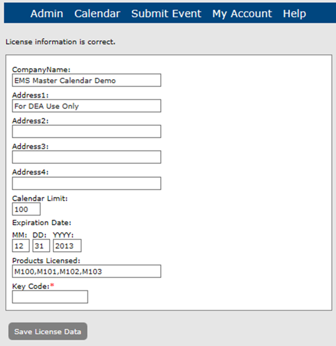

Maintaining Master Calendar Software Registration
As the Master Calendar site administrator, you can use the Registration function to maintain your Master Calendar registration information. This information (provided to your organization by EMS) includes your company name, address, calendar limit, the expiration date for your registration, the products licensed, and a unique key code to activate the registration.
1. On the Admin menu, point to Site Administration > Registration. The Registration page opens, listing all your current Master Calendar registration information.

2. You can update this information.
 | Warning:Do not edit any information on this page unless you receive new information from EMS. In addition, the information is case-sensitive and you must enter the information exactly as EMS provides it to your organization, or you cannot save the updated information. EMS recommends that instead of manually entering any modifications, that you copy and paste the new information line by line on this page. |
3. When you are done viewing or making any updates to the registration information, click Save License Data.
Page tags: article:topic